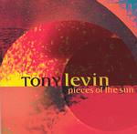

| Artist: | Tony Levin |
| Title: | Pieces Of The Sun |
| Label: | Narada 72438-11626-2-0 |
| Length(s): | minutes |
| Year(s) of release: | 2002 |
| Month of review: | [04/2004] |
| 1) | Apollo | 5.49 |
| 2) | Geronimo | 3.11 |
| 3) | Aquafin | 5.13 |
| 4) | Dog One | 5.15 |
| 5) | Tequila | 5.20 |
| 6) | Pieces Of The Sun | 7.20 |
| 7) | Phobos | 7.08 |
| 8) | Ooze | 4.16 |
| 9) | Blue Nude Reclining | 3.08 |
| 10) | The Fifth Man | 5.47 |
| 11) | Ever The Sun Will Rise | 9.08 |
| 12) | Silhouette | 4.37 |
Geronimo is a more up-beat track, with the accent on rhythm and groove. There is plenty of melody in this one as well, but that is certainly not the strongest part of it. The main melody is played by the guitar by the way. The bass rumbles deeply, the repetitiveness reminds of King Crimson. Aquafin on the other hand is a light opener with plenty of beautiful acoustic guitar. The melody is in my ears quite similar to Seal's Kiss From A Rose. The final part includes the same theme but played on electric guitar, a bit easy that.
Dog One is a previously unreleased song written by Peter Gabriel. It is a very percussive track with spoken words in them, plenty of groove. It is quite a typical Gabriel track, although on the modern and cold side for him. Quite nice.
With Tequila we move to even more percussive areas, the Carribean in fact. On the other hand the haziness of some of the parts, is more in the line of Japan, while the guitar touches on rowdy blues at times. I am not that fond of this one. It simply comes and goes.
I like Pieces Of The Sun a lot better with its opening of pounding African drums, and the sharp guitar sound that follows. A song unleashed it is a heavy piece but not without melody in even its inaccessible parts. These more melodic parts are alternated with the funky drum and bass sections. The guitar lines return again towards the end.
Phobos is an old Synergy (aka Larry Fast) track, with a good dark drive in it. Ooze is a lazy bass riddled piece with reversed sounds everywhere. The melodic side of it has a definite Arabic tinge. A repetitive piece, but full of atmosphere.
Blue Nude Reclining is a comparatively short piece, a mellow one with sax and easy soft rhythms. The Fifth Man is a repetitive piece, opening with plenty of Stick and including some fuller rounded passages as well. Although the booklet refers to King Crimson, I can not see it like that, the melody is too ehm anthemic. The music could be used, if with a little more restraint, as soundtrack anthem for a major movie. A very good track.
Ever The Sun Will Rise is the longest track on the album. The opening has Stick and piano and is moody. A bit like Gordian Knot's cover of the Bach piece on the debut album. However, then the beat sets in and we get a meandering guitar set on a heavy beat. We close down with Silhouette, a piano and a fretless bass, are dominant on this moody and mellow piece.